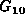
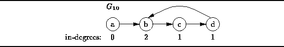
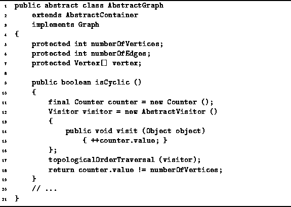

Data Structures and Algorithms
with Object-Oriented Design Patterns in Java
Data Structures and Algorithms
with Object-Oriented Design Patterns in Java
The final application of graph traversal
that we consider in this section
is to test a directed graph for cycles.
An easy way to do this is to attempt a topological-order traversal
using the algorithm given in Section  .
This algorithm only visits all the vertices of a directed graph
if that graph contains no cycles.
.
This algorithm only visits all the vertices of a directed graph
if that graph contains no cycles.
To see why this is so,
consider the directed cyclic graph  shown in Figure .
The topological traversal algorithm begins
by computing the in-degrees of the vertices.
(The number shown below each vertex in Figure
is the in-degree of that vertex).

Figure: A directed cyclic graph.
At each step of the traversal, a vertex with in-degree of zero is visited. After a vertex is visited, the vertex and all the edges emanating from that vertex are removed from the graph. Notice that if we remove vertex a and edge (a,b) from , all the remaining vertices have in-degrees of one. The presence of the cycle prevents the topological-order traversal from completing.
Therefore, the a simple way to test whether a directed graph is cyclic is to attempt a topological traversal of its vertices. If all the vertices are not visited, the graph must be cyclic.
Program gives the implementation of the isCyclic
method of the AbstractGraph class.
This boolean-valued accessor returns true if the graph is cyclic.
The implementation simply makes uses a visitor that counts
the number of vertices visited during a
topologicalOrderTraversal of the graph.

Program: AbstractGraph class isCyclic method.
The worst-case running time of the isCyclic method
is determined by the time taken by the topologicalOrderTraversal.
Since  ,
the running time of isCyclic is
,
the running time of isCyclic is
 when adjacency matrices are used to represent the graph
and
when adjacency matrices are used to represent the graph
and  when adjacency lists are used.
when adjacency lists are used.
 Copyright © 1998 by Bruno R. Preiss, P.Eng. All rights reserved.
Copyright © 1998 by Bruno R. Preiss, P.Eng. All rights reserved.